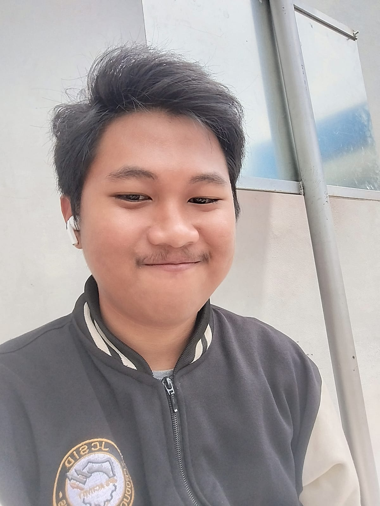
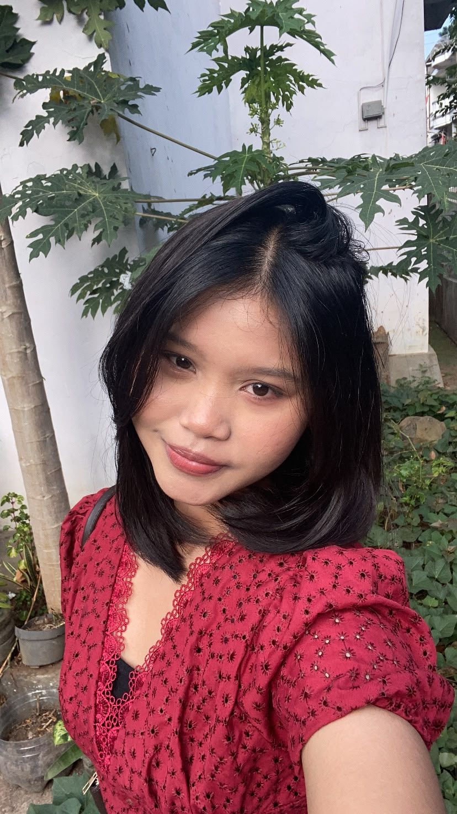
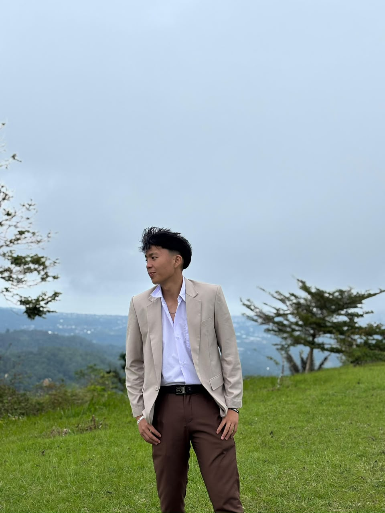

Tentang Portal &
Tim Developer
Tujuan dibuatnya website Wifi Tetangga serta profil singkat
tim mahasiswa pengembang di balik website ini.
Mengapa Wifi Tetangga Dibuat?
Website Wifi Tetangga: Portal Komunitas Mahasiswa dibuat untuk memudahkan mahasiswa menemukan komunitas sesuai minat, melihat informasi kegiatan kampus, serta melihat dokumentasi acara dalam satu tempat. Terinspirasi dari alam yang tak pernah berhenti bertumbuh, warna hijau menjadi doa sekaligus komitmen agar website ini terus berevolusi, hidup, dan memberi dampak positif di setiap langkahnya.
Selain itu, website ini juga menjadi media belajar dan proyek tugas asistensi mata kuliah Pengantar Teknologi Informasi menggunakan HTML, CSS, dan Bootstrap.
Tentang Kami Sebagai Developer

Yerland Argya Yudistira
NIM: 672026159 • Teknik Informatika
Latar belakang singkat: Mahasiswa Teknik Informatika yang menyukai pengembangan web dan desain antarmuka.

Christabel Awaundha Kevin
NIM: 672026076 • Teknik Informatika
Latar belakang singkat: Mahasiswa Teknik Informatika yang hobi ngutak ngatik barang barang elektronik dan digital. Pecinta kopi dan senang mendengarkan musik sudah jadi rutinitasnya.

Linda Nanda
NIM: 672026081 • Teknik Informatika
Latar belakang singkat: Mahasiswa Teknik Informatika yang senang mempelajari hal baru, tertarik pada dunia teknologi, dan terus mengembangkan diri melalui berbagai pengalaman.

Alven Faith Pelealu
NIM: 672026079 • Teknik Informatika
Latar belakang singkat: Mahasiswa Teknik Informatika yang terlibat dalam penyusunan form dan dokumentasi.